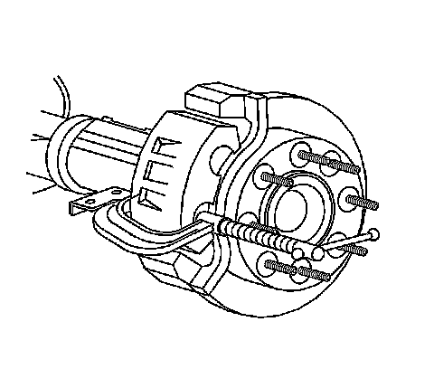
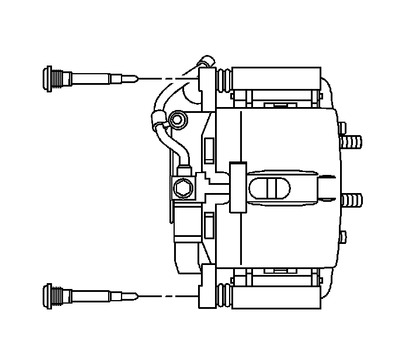

Rear Disc Brake Hardware Replacement (2500 Series)
Rear Disc Brake Hardware Replacement (2500 Series)
Caution: Refer to Brake Dust Caution.
Removal Procedure

1. Inspect the fluid level in the brake master cylinder reservoir.
2. If the fluid level is midway between the maximum - full point, and the minimum allowable level, no fluid needs to be removed from the reservoir before proceeding.
3. If the fluid level is higher than midway between the maximum - full point, and the minimum allowable level, remove fluid to the midway point before proceeding.
4. Remove the tire and wheel assembly.
5. Compress the brake caliper pistons.
1. Install a large C-clamp over the body of the top of the caliper housing and against the back of the outboard pad.
2. Slowly tighten the C-clamp until the pistons are pushed completely into the caliper bores.
3. Remove the C-clamp from the caliper.

6. Remove the brake caliper bracket bolts.
Caution: Do not depress the brake pedal with the brake rotors/calipers and/or the brake drums removed. Damage to the brake system may result. If brake system damage occurs and is not repaired, vehicle damage and/or personal injury or death may result.
Notice: Refer to Brake Caliper Notice.
7. Remove the caliper and caliper bracket as an assembly.
8. Remove the brake caliper bolts.
9. Remove the caliper from the caliper bracket.

10. Remove the brake pads from the caliper bracket.
11. Remove the anti-rattle clips.

12. Remove the slide pins (5) from the caliper bracket (3).
13. Remove the slide pin boots (4) from the caliper bracket.
14. Inspect the disc brake hardware. Refer to Rear Disc Brake Mounting and Hardware Inspection.
Installation Procedure
1. Lubricate the caliper bracket bushings and the slide pins with high temperature silicone brake lubricant.
2. Install the slide pin boots (4) to the caliper bracket.
3. Install the slide pins (5) to the caliper bracket (3).
4. Install the anti-rattle clips to the caliper bracket.
5. Install the brake pads.
6. Install the caliper to the caliper bracket.
7. Perform the following procedure before installing the caliper bracket bolts and the brake caliper bolts:
1. Remove all traces of the original adhesive patch.
2. Clean the threads of the bolt with brake parts cleaner or the equivalent and allow to dry.
3. Apply Threadlocker GM P/N 12345493 (Canadian P/N 10953488) to the threads of the bolt.
8. Install the brake caliper bolts. DO NOT tighten.
9. Install the brake caliper bracket and caliper as an assembly.
Notice: Refer to Fastener Notice.
10. Install the brake caliper bracket bolts.
Tighten the bolts to 300 N.m (221 lb ft).
11. Tighten the brake caliper bolts.
Tighten the bolts to 108 N.m (80 lb ft).
12. Install the tire and wheel assembly.
13. With the engine OFF, gradually apply the brake pedal approximately 2/3 of its travel distance.
14. Slowly release the brake pedal.
15. Wait 15 seconds, then repeat steps 7-8 until a firm brake pedal is obtained. This will properly seat the brake caliper pistons and brake pads.
16. Fill the master cylinder reservoir to the proper level with clean brake fluid, if necessary. Refer to Master Cylinder Reservoir Filling.